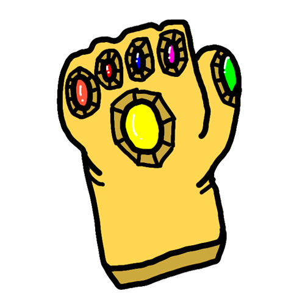
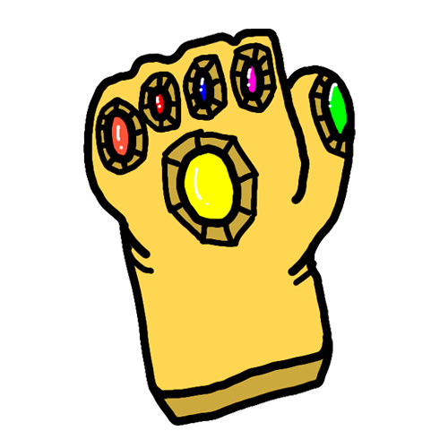

MARC VELAYO
 



ANG LUMILIPAD KONG KUBO
Ang Lumilipad Kong Kubo, 3D, 2020. (Art 107)
"Home Is Where The Heart Is"---- I truly believe in this phrase. I am Marc Velayo and I am a proud immigrant.
Moving to this country has blessed me with a lot of great opportunities to live a better life. But, I can't
help but to miss my home. My humble abode where I was raised, where I dreamt, where I spent countless joyful
memories with the people I love.
I used Blender to create a 3D Model of a Bahay Kubo. "A Bahay Kubo is a type of stilt house indigenous to the
cultures of the Philippines." (Wikipedia). I wanted to create a Bahay Kubo because it reminds me of my country.
It reminds me of the simple life I used to live back in the Philippines. It reminds me of my genuine, kind
spirited countrymen who always loved and cared for each other.
A Bahay Kubo is a symbol of unity in the Philippines. It is created with various pieces of bamboo, wood and
nipa leaves. "The advantage of using lightweight materials in building bahay kubo is that it can easily be moved to another place. If a family decides to transfer to another area within the village, usually their neighbors
will help them move the house. It is called Bayanihan, an old Filipino tradition of helping each other without
the need to ask for it in the name of friendship and camaraderie." (Balay.ph).
This piece, which I titled "Ang Lumilipad Kong Kubo" (My Flying House) is inspired from the Disney movie, Up.
I wanted to evoke a sense of nostalgia and tie the concept of immigration with a modern twist. I am a fan of
the movie, Up and I asked myself-- "What if my house just suddenly flew up and got here?".
I've lived a happy life in the Philippines, but I always dreamt of living a better, stable life. The balloons that
are tied on to the Bahay Kubo represents my dreams and hopes. They are colored in primary colors- red, blue
and yellow which represents my country's flag. There are a couple of balloons that
aren't tied in to the house, which represents the relationships and memories I've lost in the process of moving.
The table inside the Bahay Kubo reminds me of my memories with my family, as we always had our
meals together at the same time. The candle represents the hope that
I have that someday I'll be back again.
A Bahay Kubo will always remind me of my home, my loved ones and myself.
Ang lumilipad kong bahay. Ang lumilipad kong mga pangarap. Ako ay patuloy na lilipad.
(My flying house. My soaring dreams. I will continuously fly.)